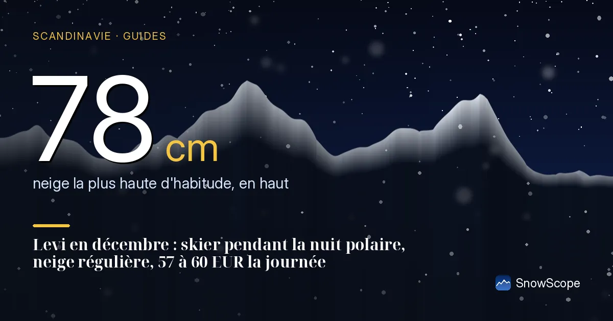

Levi en décembre : skier pendant la nuit polaire, neige régulière, 57 à 60 EUR la journée
Levi fait partie des rares endroits de cette série où la neige de décembre a augmenté au lieu de baisser. Dans nos 46 hivers d'historique, la moyenne de décembre est passée de 41 cm sur les 15 premiers hivers à 45 cm sur les 15 derniers, et chaque semaine de Noël des 15 derniers hivers avait au moins 30 cm. La journée coûte 60 EUR sur place, ou 57 EUR en ligne en réservant au moins 14 jours avant.
Consultez les prévisions neige en temps réel pour Levi sur l'application SnowScopeHauteurs de neige, alertes poudreuse et carte 3D, gratuitement.
Début décembre
Levi est un fell, une colline arrondie de Laponie, avec des remontées de 197 m à 530 m, 51 km de pistes cartographiées et 27 remontées. Comme la colline est basse et douce, notre historique donne une seule valeur pour tout le domaine. Du 1er au 7 décembre, 57 % des hivers avaient 30 cm ou plus ; le premier jour habituel avec 30 cm est le 27 novembre.
Début décembre, c'est aussi le début de la nuit polaire : à cette période le soleil dépasse à peine l'horizon, et pendant une partie de décembre il ne se lève pas du tout. La lumière est bleue et rose quelques heures, et l'on skie surtout dans la pénombre.


Mi-décembre
La semaine du 15 au 21 décembre, la part des hivers avec 30 cm monte à 83 %. Un 15 décembre typique compte 38 cm ; une année maigre (1 sur 10) 26 cm, une bonne 52 cm. Cet écart étroit est la marque de la Laponie : rarement profond, rarement nu. Dans aucun de nos 46 hivers le sol n'était nu le 15 décembre.
La semaine de Noël
La semaine de Noël est la meilleure du mois : 91 % des hivers à 30 cm ou plus et 43 cm typiques le 24 décembre. N'attendez pas une poudreuse profonde : seuls 2 % des hivers avaient 60 cm ou plus cette semaine-là. Attendez-vous à une neige froide, damée et fiable. L'hiver dernier avait 55 cm le 24 décembre.
Avant et maintenant
Alors que la plupart des stations alpines de cette série ont perdu de la neige en décembre, Levi en a un peu gagné. La part des semaines de Noël avec 30 cm est passée de 87 % sur les 15 premiers hivers à 100 % sur les 15 derniers. Très au nord, un hiver plus doux peut rester assez froid pour neiger, et un peu plus humide.
La facture
La grille officielle 2026-27 de Levi indique 60 EUR la journée adulte sur place et 57 EUR en ligne en réservant au moins 14 jours avant, à partir du 1er décembre. C'est l'un des prix journée fixes les plus bas de cette série.
Face à Ylläs
Ylläs, le fell voisin à l'ouest, est presque identique en décembre : 38 cm un 15 décembre typique et 87 % des hivers avec 30 cm la semaine du 15 au 21 décembre. Sa journée coûte 60 EUR normalement et 55,50 EUR en basse saison jusqu'au 11 décembre, et il vend un forfait 7 jours à 254,50 EUR en basse saison.
Pour une semaine début décembre, le 7 jours basse saison d'Ylläs est le billet le moins cher ; pour un séjour plus court et plus de remontées au même endroit, Levi.
Conseils aux skieurs
- Réservez en ligne au moins 14 jours avant : 57 EUR au lieu de 60 EUR la journée.
- Choisissez la mi-décembre ou la semaine de Noël : la chance d'avoir 30 cm passe de 57 % la première semaine à 83 % puis 91 %.
- Prévoyez le grand froid et l'obscurité : une bonne frontale pour les balades, des moufles chaudes et une protection du visage.
- Hors-piste sur les fells : consultez les informations locales sur les avalanches et la météo avant de quitter les pistes balisées.
Autres cartes (sites externes)
Références et crédits
- Levi: official lift-pass prices (2026-27), checked 13 November 2026 www.levi.fi/en/ski/levi-ski-resort-services/skipasses/
- Ylläs: official lift-pass prices (2026-27), checked 13 November 2026 ski.yllas.fi/en/lift-tickets/yllas-lift-ticket-price-list/
À propos de ces chiffres
Chiffres de neige : historique SnowScope, 46 hivers passés (1980-81 à 2025-26) aux altitudes de la station, corrigé de l'altitude (une estimation pour une zone, pas les bulletins de la station) ; « bonne neige » = 30 cm ou plus au sol en moyenne sur la semaine. Carte : notre hauteur habituelle au 15 décembre répartie sur le relief selon l'altitude. Pistes et remontées : cartographie OpenSkiMap. Forfaits : grilles officielles des stations, vérifiées le 13 novembre 2026 ; les prix peuvent changer.
Bulletins d'avalanche officiels: EAWS – European Avalanche Warning Services
Citer ce bulletin
Pour la recherche, l'enseignement ou la presse : chiffres et graphiques réutilisables librement sous CC BY 4.0 avec cette citation.
SnowScope (2026), Levi en décembre : skier pendant la nuit polaire, neige régulière, 57 à 60 EUR la journée, https://snowscope.app/blog/fr/2026/11/levi-december-skiing-polar-night-snow-price.html, consulté le 2026-11-14
SnowScope (Atlas Labs). (2026, November 14). Levi en décembre : skier pendant la nuit polaire, neige régulière, 57 à 60 EUR la journée. SnowScope snow reports. https://snowscope.app/blog/fr/2026/11/levi-december-skiing-polar-night-snow-price.html
BibTeX
@misc{snowscope2026levidecemberskiingpolarn,
author = {{SnowScope (Atlas Labs)}},
title = {Levi en décembre : skier pendant la nuit polaire, neige régulière, 57 à 60 EUR la journée},
year = {2026},
month = nov,
howpublished = {\url{https://snowscope.app/blog/fr/2026/11/levi-december-skiing-polar-night-snow-price.html}},
note = {Published 2026-11-14 13:29 UTC; accessed 2026-11-14}
}· CC BY 4.0 · Méthodes, données et outils →
Levi : neige et température selon l'altitude, cet hiver vs l'hiver dernier (outils) →
Suivre Levi
Gratuit : un message quand la neige arrive, et la météo chaque matin.